02/06/2026 — Một dấu hiệu điện tâm đồ mọi bác sĩ nên nhận ra — thường gặp hơn bạn nghĩ!
Bản dịch tiếng Việt của bài "An ECG Finding Every Doctor Should Recognize — It’s More Common than You Think!" – Dr. Smith’s ECG Blog. Giữ nguyên toàn bộ 10 hình ảnh và 1 video của bản gốc.

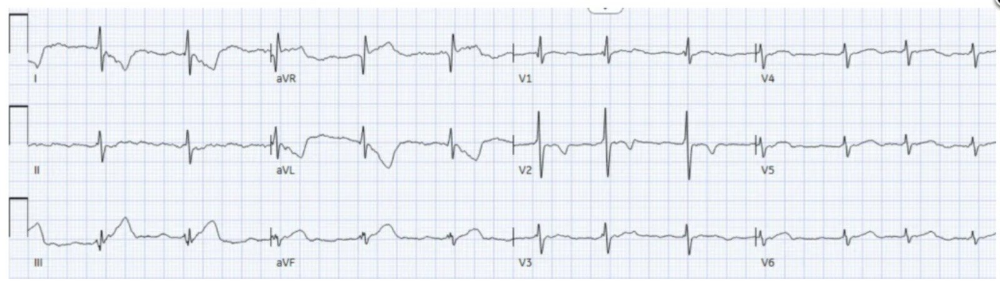
Bài viết của Dr. Mark Hellerman.
= = =
Hai bệnh nhân tám mươi mấy tuổi, đã biết có bệnh động mạch vành (CAD) lan rộng, đến khoa cấp cứu (ED) của chúng tôi trong cùng một buổi chiều vì khó chịu ở ngực. Ở cả hai ca, một “Heart Alert” (Báo động Tim) đã được kích hoạt — đòi hỏi chuyên khoa tim mạch đánh giá cấp cứu để cân nhắc kích hoạt phòng thông tim (cath lab) — dựa trên các dấu hiệu điện tâm đồ sau:
Bệnh nhân A:

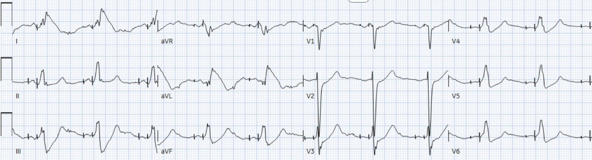
Bệnh nhân B:

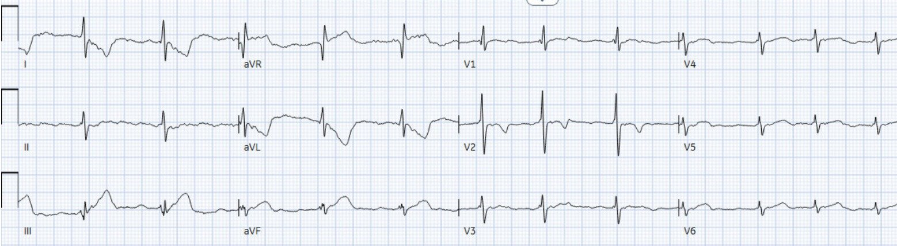
— Bạn có kích hoạt phòng thông tim cho cả hai bệnh nhân, cho không ai cả, hay chỉ cho một trong hai người?
= = =
Xem xét kỹ hơn từng ca, chúng tôi thấy rằng:
Bệnh nhân A — là một phụ nữ ngoài 80 tuổi có CAD lan rộng, xuất hiện đau ngực mức 6/10 trong lúc tập phục hồi chức năng tim mạch.

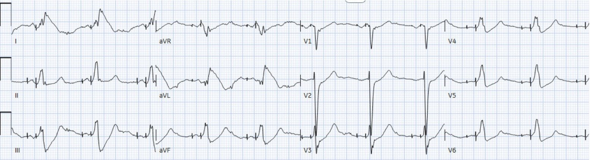
Thoạt nhìn, những sóng T ấn tượng này có thể ngay lập tức gây lo ngại về một OMI có +STEMI — thậm chí gợi đến dấu hiệu “Shark Fin” (vây cá mập) (một hình ảnh điện tâm đồ trong đó phức bộ QRS, đoạn ST và sóng T hòa vào nhau thành một dạng sóng hình tam giác khổng lồ, liên quan với thiếu máu cục bộ xuyên thành nặng và tắc động mạch vành nguy cơ cao).
Tuy nhiên, những người đọc lâu năm của blog này sẽ nhanh chóng nhận ra rằng bước xử trí tốt nhất tiếp theo không phải là heparin hay kích hoạt phòng thông tim, mà là đặt lại vị trí các điện cực chuyển đạo chi!
Tôi đã gửi điện tâm đồ này cho một nhóm những người đam mê điện tâm đồ — trong đó có Steve Smith và Pendell Meyers — và họ ngay lập tức nhận ra hình ảnh này là APTA (nhiễu do mạch đập động mạch — Arterial Pulse-Tapping Artifact).
May mắn thay, bác sĩ fellow tim mạch trực hôm đó là một người đọc blog. Sau khi yêu cầu đặt lại vị trí điện cực — chẩn đoán nghi ngờ là nhiễu do mạch đập động mạch đã được khẳng định:

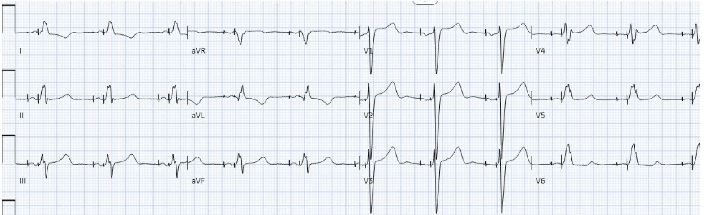
Dấu hiệu tố cáo là sự hiện diện của biến dạng ST-T kỳ quái, phi sinh lý, không phù hợp với vùng phân bố của một động mạch vành, và chừa lại một chuyển đạo, và chỉ duy nhất một chuyển đạo, trong số các chuyển đạo I, II và III. Chỉ cần đặt lại điện cực thủ phạm ra xa khỏi mạch máu đang đập, nhiễu đã biến mất.
Troponin I độ nhạy cao gần như đi ngang ở mức 24 –> 30 –> 28 ( trong bối cảnh bệnh thận mạn với creatinine lúc nhập viện là 2.5). Siêu âm tim qua thành ngực (TTE) cũng không cho thấy thay đổi đáng kể so với lần trước, với chức năng tâm thu thất trái ở mức thấp của bình thường (EF 52%) và các rối loạn vận động thành khu trú mạn tính, gồm giảm động nặng vùng đáy thành dưới và giảm động mức độ vừa vùng vách–mỏm.
Sáu giờ sau, trong cùng ca trực đó, bác sĩ fellow tim mạch lại được gọi đánh giá cấp cứu để cân nhắc kích hoạt phòng thông tim — lần này cho Bệnh nhân B, một người tám mươi mấy tuổi có CAD lan rộng, đã phẫu thuật bắc cầu chủ vành (CABG) — đến viện vì khó thở kèm khó chịu ở ngực.
Thoạt nhìn, điện tâm đồ này dường như cho thấy sóng T tối cấp ở các chuyển đạo thành dưới kèm ST chênh xuống soi gương (reciprocal) ở aVL — gây lo ngại về một OMI thành dưới cấp.

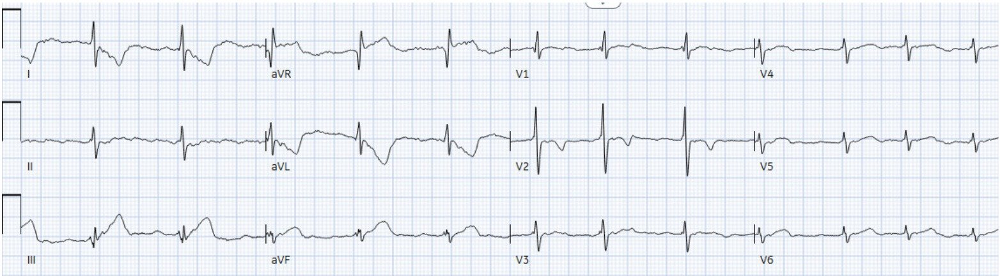
Ca này khó vì ít nhất 2 lý do:
- 1) Những sóng đó thực sự trông giống sóng T tối cấp ở các chuyển đạo thành dưới — đến mức ngay cả Queen of Hearts cũng ủng hộ lo ngại về OMI cấp.
- 2) Thiên kiến nhận thức có thể khiến người ta gạt bỏ khả năng nhiễu do mạch đập động mạch ở bệnh nhân thứ hai chỉ vài giờ sau — với lập luận rằng một chẩn đoán “hiếm” như vậy khó có thể xảy ra hai lần trong một ca trực. Trên thực tế, nhiễu điện tâm đồ này có lẽ là bị bỏ sót chứ không thực sự hiếm — và một khi bạn đã học được cách nhận ra nó, bạn sẽ bắt đầu thấy nó thường xuyên hơn nhiều trong thực hành hằng ngày.
- Smith: đây cũng là kinh nghiệm của tôi: APTA RẤT thường gặp, nhưng đôi khi nó tinh tế đến mức người thầy thuốc không đi tìm lời giải thích cho các dấu hiệu trên điện tâm đồ.
= = =
Một lần nữa, tôi gửi điện tâm đồ này cho cùng nhóm những người đam mê điện tâm đồ. Pendell — nhận ra có một chuyển đạo chi duy nhất được chừa lại một cách bất thường ( = chuyển đạo II) — lập tức trả lời: “Thử đổi điện cực xem, cho chắc”.
Quả nhiên, sau khi đặt lại vị trí điện cực — các bất thường trông như sóng T tối cấp đã biến mất hoàn toàn:

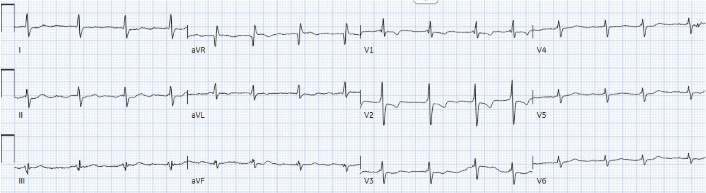
Smith: tuy vậy, điện tâm đồ này có giá trị chẩn đoán phì đại thất phải (RVH). Có trục lệch phải và sóng R rất lớn ở V1, với tỉ lệ R/S ở V2 gần bằng 1. Có các bất thường tái cực điển hình của RVH ở chuyển đạo V2. ST chênh xuống và sóng T ở V2 đó có thể khiến bạn nghĩ đến OMI thành sau, nhưng các dấu hiệu RVH sẽ giúp bạn tránh đưa ra chẩn đoán đó, vì đây là ST-T điển hình của RVH!
Cuối cùng, tình trạng khó thở/khó chịu ở ngực của bệnh nhân được quy cho suy hô hấp giảm oxy cấp trên nền mạn do nhiễm RSV kèm đợt cấp COPD. Troponin I độ nhạy cao gần như đi ngang (39 –> 41) — và siêu âm tim qua thành ngực (TTE) lặp lại cho thấy chức năng tâm thu thất trái đã cải thiện so với lần trước (30% lên 50%), cùng với các rối loạn vận động thành khu trú mạn tính.
= = =
Bàn luận: Nhiễu do mạch đập động mạch (Arterial Pulse-Tapping Artifact)
Vậy chính xác thì nhiễu do mạch đập động mạch là gì, và làm thế nào để nhận ra nó trên điện tâm đồ?
Cách tốt nhất để giải thích câu trả lời — là qua một ca thứ 3 mà tôi gặp chỉ vài tuần trước đó.
- Ca thứ 3 này vừa được công bố (Nerkar M, Rainer K, Frye J, Zhang DT, và Hellerman MB — JACC Case Rep: 31(20): May, 2026).
- Điện tâm đồ dưới đây là điện tâm đồ ban đầu trong bài báo JACC Case Reports này. Video giải thích dài 2 phút về ca này (cũng từ bản thảo JACC này) — sau đó điểm lại phần sinh lý được dùng để nhận ra chi “thủ phạm” chỉ trong vài giây!

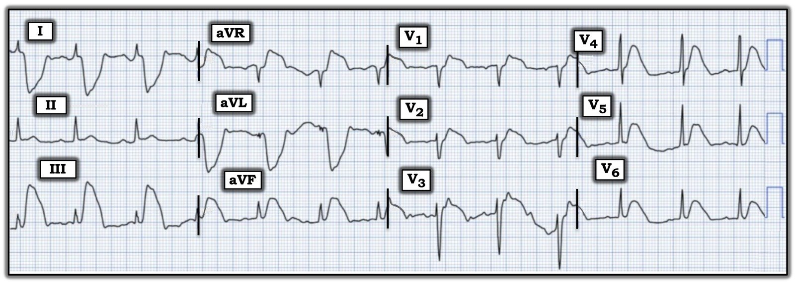
= = =
Điều cần nhớ
- Nghi ngờ nhiễu do mạch đập động mạch khi các bất thường ST-T kỳ quái chừa lại một trong 3 chuyển đạo chi chuẩn.
- Chuyển đạo duy nhất trong I, II và III không có hình dạng kỳ quái cho biết 2 điện cực không bị ảnh hưởng
- Chuyển đạo tăng thế (aVR/aVL/aVF) có nhiễu nhiều nhất cho biết điện cực “thủ phạm”.
- Khẳng định nhiễu do mạch đập động mạch rất đơn giản: đặt lại vị trí điện cực và ghi lại điện tâm đồ trước khi kích hoạt phòng thông tim.
- APTA thường gặp hơn nhiều so với những gì phần lớn thầy thuốc nghĩ! Như các ca trên cho thấy — bạn có thể gặp nhiều ví dụ chỉ trong một ca trực. Nhận ra kịp thời có thể tránh việc kích hoạt phòng thông tim không cần thiết!
Hãy nhớ:
Xác định điện cực “thủ phạm” rất đơn giản — như đã được mô tả một cách tinh tế nhiều lần trên Dr. Smith’s ECG Blog bởi các BS. Smith, Meyers, Grauer và Frick [26/08/2022, 08/11/2022, 05/12/2022, 17/01/2023, 17/03/2023, 18/02/2024] ==> chuyển đạo tăng thế (aVR/aVL/aVF) có nhiễu nhiều nhất cho biết điện cực thủ phạm:

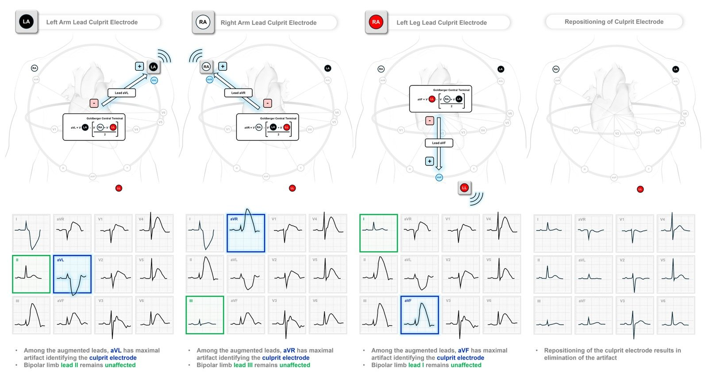
= = =
= = =
==================================
BÌNH LUẬN CỦA TÔI, bởi KEN GRAUER, MD (2/6/2026):
Cách đây chỉ vài năm — tôi chưa từng nghe nói đến PTA (nhiễu do mạch đập — Pulse-Tap Artifact, còn gọi là APTA= nhiễu do mạch đập động mạch — Arterial Pulse-Tap Artifact). Đến nay — tôi đã có được “chuyên môn” trong việc nhận ra thực thể thường gặp đến bất ngờ này, điều mà chắc chắn bạn sẽ dùng để gây ấn tượng với đồng nghiệp, bằng cách trấn an họ ngay lập tức rằng không cần kích hoạt phòng thông tim cho những ca như Bệnh nhân A và B (xem phần bàn luận xuất sắc ở trên của Dr. Hellerman về Cách thức và Lý do nhận ra PTA). Sau đó bạn sẽ khẳng định cho đồng nghiệp thấy việc chỉ cần đặt lại vị trí các điện cực chuyển đạo đã khiến những sóng lệch đáng lo ngại kia biến mất một cách kỳ diệu như thế nào.
- Cái hay của hiện tượng PTA này — là bạn cũng sẽ ngay lập tức nói được cho đồng nghiệp điện cực chi nào là “thủ phạm” gây ra PTA.
- Và thật kỳ diệu, chỉ sau một thời gian ngắn đến bất ngờ, đồng nghiệp của bạn sẽ quay lại báo với bạn — về nhiều ca PTA khác mà họ vừa phát hiện ra, giờ đây khi họ đã biết cần tìm gì!
- Và rồi cuối cùng (Hy vọng là vậy! ) — tin tức sẽ lan đến đủ nhiều người hành nghề để PTA được nhận ra dễ dàng không chỉ bởi các thầy thuốc cấp cứu — mà còn bởi kỹ thuật viên và những người trực tiếp ghi điện tâm đồ, sao cho họ sẽ ngay lập tức nhận ra và sửa việc đặt điện cực sai lên một động mạch đang đập mà không phải quay lại chỗ bệnh nhân để ghi điện tâm đồ lần 2.
- Tôi khuyến khích tất cả người đọc Dr. Smith’s ECG Blog xem Video giải thích dài 2 phút đầy bổ ích trong phần bàn luận ở trên của Dr. Hellerman (Video này được lấy từ bài công bố gần đây của Nerkar, Hellerman và cs. trên — JACC Case Rep: 31(20): May, 2026).
- Để tra cứu DỄ DÀNG — bạn có thể truy cập nhanh nhiều bài Technical Misadventures (sự cố kỹ thuật) (đảo điện cực, các dạng nhiễu khác nhau — gồm một loạt ca PTA) — từ Menu ở ĐẦU mỗi trang của Dr. Smith’s ECG Blog.
- Hình “ưu tiên” của tôi: Dù đã phát hiện bao nhiêu lần một “sự cố” PTA — tôi vẫn thấy mình quay lại với tam giác Einthoven như một công cụ trực quan giúp xác định những chuyển đạo nào được ghi từ hoạt động điện xuất phát từ điện cực chi nào (Hình 1).
= = =
Hình 1: Tam giác Einthoven — do Willem Einhoven đề xuất lần đầu năm 1912, vẫn là hình “ưu tiên” của tôi để hình dung mối liên hệ giữa các chuyển đạo điện tâm đồ và các điện cực ghi chuyển đạo chi.

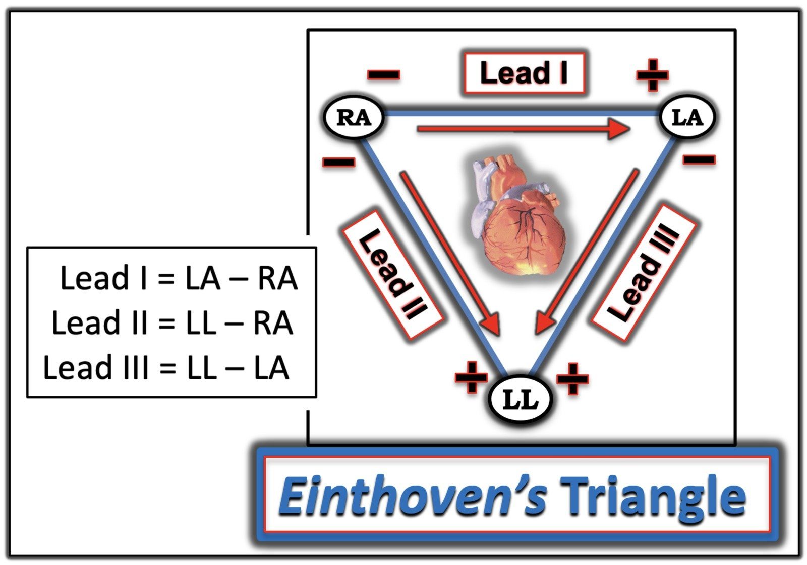
= = =
Nhìn lại các điện tâm đồ của Bệnh nhân A & B …
Dr. Hellerman đã phân tích một cách khéo léo Cách thức & Lý do để nhận ra các bản ghi có PTA. Nhưng bạn có nhận thấy những dấu hiệu điện tâm đồ quan trọng khác trong các ca ông trình bày không?
- Hãy NHÌN lại các bản ghi của Bệnh nhân A và B (mà tôi đã đưa lại trong Hình 2) …
= = =
Hình 2: Tôi đã đưa lại các điện tâm đồ ban đầu của Bệnh nhân A và B — cũng như điện tâm đồ ghi lại của Bệnh nhân B. Bạn thấy thêm những dấu hiệu nào?

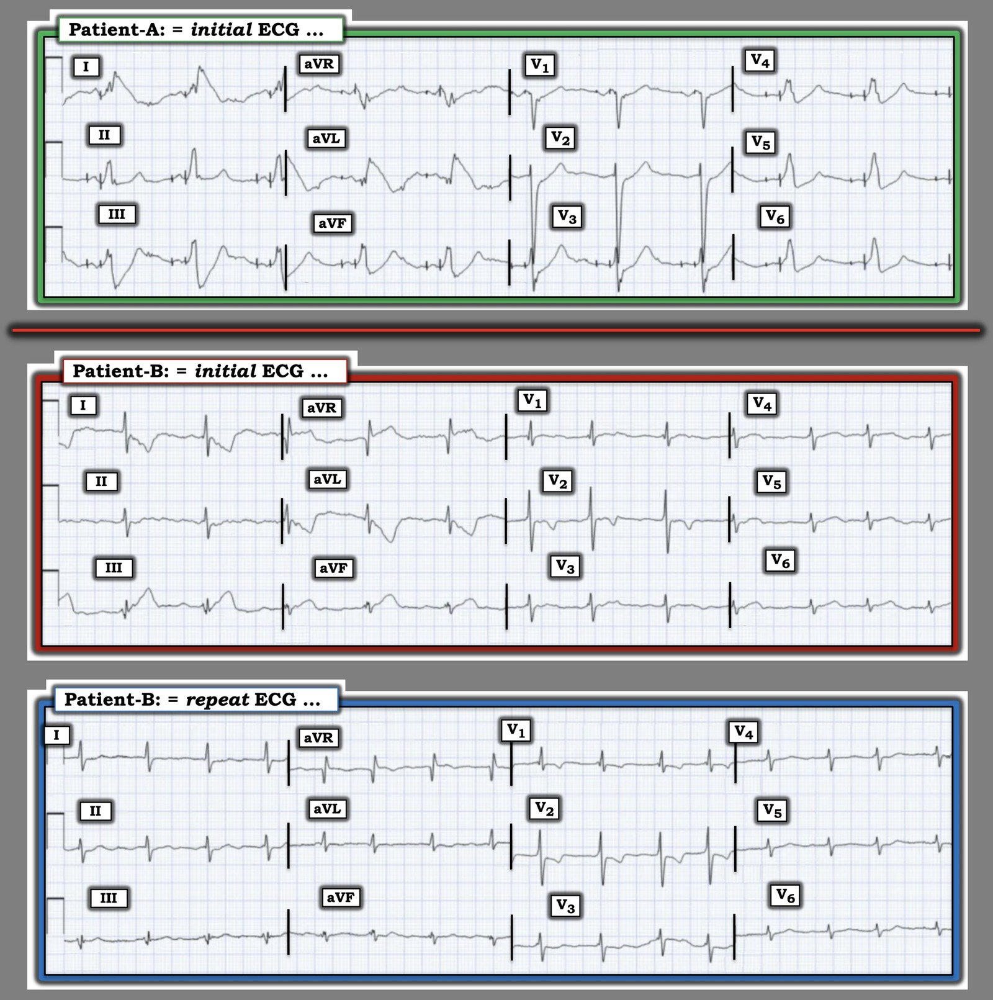
= = =
Trả lời:
- Bệnh nhân A: Có cả tạo nhịp nhĩ và thất trên các điện tâm đồ của Bệnh nhân A. Việc đánh giá thay đổi ST-T cấp thường sẽ khó hơn, dù chắc chắn vẫn làm được với nhiều bản ghi có tạo nhịp. Ca này là một ví dụ hay cho thấy cùng những nguyên tắc ấy được dùng để phát hiện PTA và chi “thủ phạm” trên cả bản ghi có tạo nhịp lẫn không tạo nhịp.
- Bệnh nhân B: Sau khi đặt lại điện cực ghi LA và ghi lại điện tâm đồ ở Bệnh nhân B — có 2 dấu hiệu quan trọng cần ghi nhận: i) Nhịp không phải nhịp xoang. Thay vào đó — khoảng R-R không đều hoàn toàn một cách tinh tế, không có sóng P = Rung nhĩ , ở đây với đáp ứng thất được kiểm soát ; — và, ii) Có RVH rõ rệt — như được gợi ý bởi sóng R chiếm ưu thế ở chuyển đạo V1 + dấu hiệu “tăng gánh” thất phải (sóng T đảo ngược ở các chuyển đạo V1,V2). Ngoài ra — một số nhát ở chuyển đạo V1 dường như có dạng qR — thường liên quan với tăng áp phổi đáng kể. Các dấu hiệu điện tâm đồ khác liên quan với bệnh phổi nặng và kéo dài gồm điện thế thấp ở một số chuyển đạo (đặc biệt ở các chuyển đạo ngực trái V5,V6) — và sóng S ở không dưới 10/12 chuyển đạo! Đánh giá đúng mức độ nặng của COPD lâu năm ở bệnh nhân này là một yếu tố quan trọng để quyết định cách xử trí tối ưu — và điều này có thể xác định dễ dàng chỉ bằng một cái nhìn nhanh vào bản ghi này!
= = =
= = =